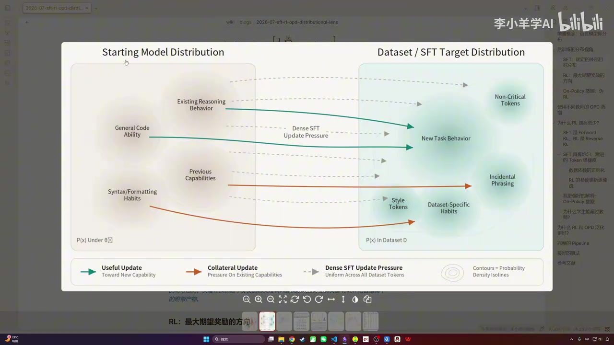
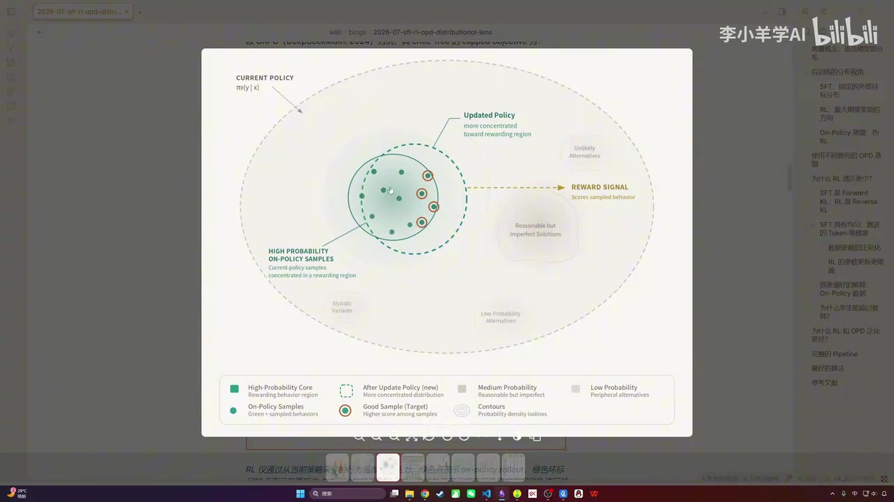
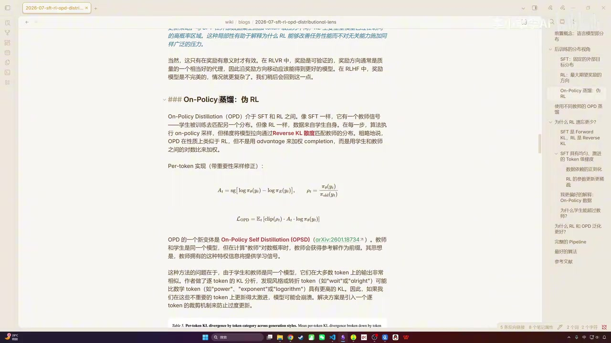
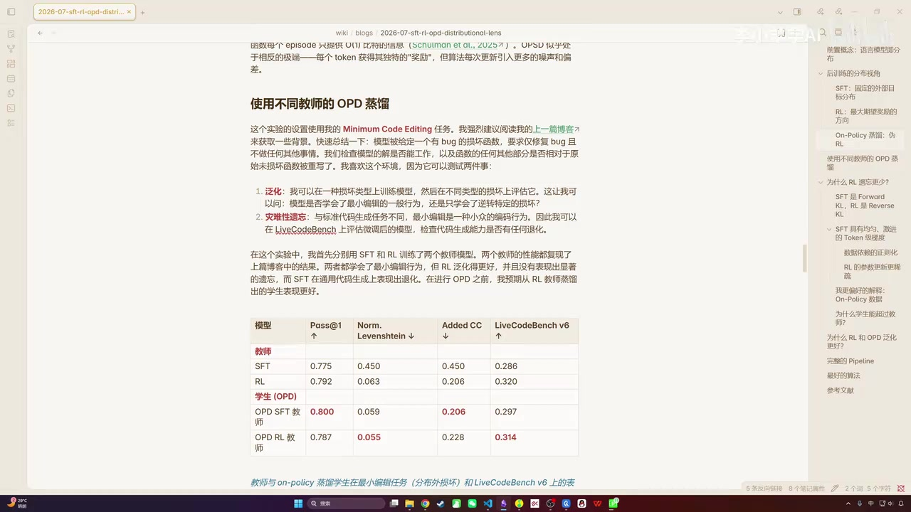
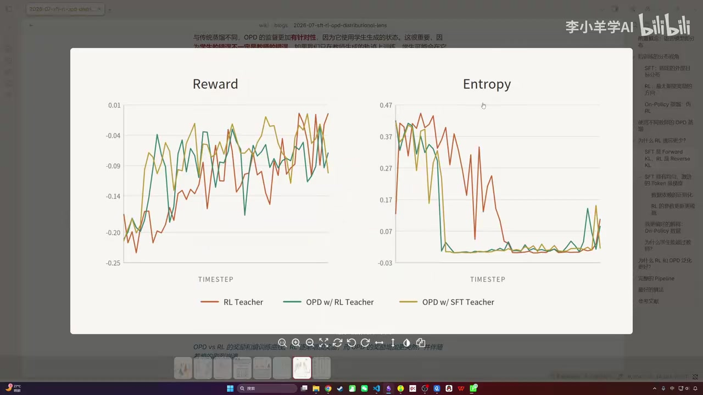

01｜SFT、RL与OPD的分布视角对比
00:00:00李小阳 · 主讲人大家好，我是李小阳。今天给大家分享一篇博客，这篇博客的名字叫做《从分布的视角观察 SFT、RL 和 OPD 算法的区别》。我感觉这篇博客讲得非常不错，因为它提供了一种新的视角，或者说一种新的思考方法，帮助我们理解当前大模型训练链中这些常用后训练算法之间的区别，也让我们更容易理解：为什么 SFT 容易带来灾难性遗忘？为什么 RL 的泛化性会更好？通过这篇博客，能给我们带来一些启发。因为这篇博客是纯英文的，所以为了方便讲解，我把它翻译成了中文，并放在了我的 Markdown 文件里。
00:00:48李小阳 · 主讲人我还加了一些额外内容，以便于讲解和理解。另外，在讲解 RL 和 OPD 的分布时，我分别实现了 SFT、RL 和 OPD 三者的 loss 函数，后续我们会一起讲解。下面我们就正式开始。首先看作者的开头：他说自己一直在从分布的角度思考大语言模型的后训练方法。他认为，语言模型本质上是一个序列上的概率分布；当我们对大语言模型进行后训练，或试图教会它某个任务时，本质上是在重塑该模型的概率分布。
00:01:35李小阳 · 主讲人不同的后训练方法，重塑这个分布的方式不同，将什么视为目标、以及如何直接定义该目标，也存在区别。也就是说，SFT、RL 和 OPD 之间存在差异。虽然‘分布’不是一个特别精确的表述，也不太容易用严格的数学语言描述，但它是一个非常有用的思维模型，能够帮助我们定性地理解后训练算法之间的差异。在开始之前，我们先明确什么是语言模型的分布。当前的大语言模型是 token-by-token 生成的。
00:02:22李小阳 · 主讲人假设输入是‘一加一等于’，正常情况下，模型输出的下一个 token 应该是‘二’。每次预测下一个 token 时，当前位置面对的是一个非常大的词表——例如，DeepSeek 的词表大小约为 128K 个 token。模型会输出一个覆盖整个词表的概率分布，即当前 token 位置上的概率分布。例如，‘二’的概率值可能为 0.73，而其余 127K 多个 token 的概率总和仍小于 0.73。
00:03:05李小阳 · 主讲人总之，所有 token 的概率之和为 1，该分布代表了当前位置上 token 的概率分布。那么，什么是语言模型的分布？因为语言模型不是只预测单个 token，而是逐 token 生成一个完整序列，因此语言模型的分布是指：生成整个序列时，各位置 token 分布的联合分布，大致可表示为该公式。这就是语言模型作为‘序列上一个分布’的数学含义，也是作者开头所指的‘分布’的意义。
00:03:44李小阳 · 主讲人接下来，我们从分布视角看 SFT 在做什么。这是 SFT 的 loss，即常见的交叉熵 loss。交叉熵 loss 等价于前向 KL 散度，后续我们会展示其推导过程。在 SFT 过程中，通常有一个标注好的数据集，该数据集可以由人工编写，也可以由更强的模型生成；总之，它是一组（query, response）对。假设模型在初始状态（尚未训练）已具备自身的分布，这是它的初始分布图。
00:04:29李小阳 · 主讲人颜色较深的区域可类比为地理海拔图：颜色越深，海拔越高，形成一座座山丘；每个山丘代表模型此前固化的一种行为模式。SFT 的作用，就是根据训练数据，将这些行为引导至一个新的目标分布。但在 SFT 训练过程中，通常会造成一定遗忘，因为它是强行将原始分布拉向目标分布，从而可能破坏模型已有的能力。作者指出：由于 KL 散度的性质，从哪个初始分布出发并不重要，只要最终收敛到目标分布即可。

00:05:17李小阳 · 主讲人所以他认为SFT其实有一种非常自然的灾难性遗忘的失败模式。如果训练数据集的分布远离模型原始的分布，那么模型就没有必要在原有分布附近寻找解，而是直接被拉向标注数据集的分布。但这并不是说SFT不好，实际上SFT非常有用。作者提到，SFT更适合做一种彻底改变输出格式的冷启动任务，比如直接从基座模型开始训练SFT。好，我这里准备了一个SFT loss的代码实现，可以给大家看一下。
00:06:04李小阳 · 主讲人首先这里是它的主要逻辑，其实就是一个交叉熵损失的实现。输入是模型输出的logits，还包括input IDs（即token的ID），以及一个loss mask。这里先对logits、label和mask做一个偏移，因为我们需要用t位置去预测t+1位置的label，偏移后再收集log p，最后根据mask做加权平均。这里有两个函数，整体上我们实现了SFT的交叉熵损失。
00:06:44李小阳 · 主讲人然后我举了一个具体的例子：首先构造了一个比较小的简单词表，共15个字，每个字是一个token，编号从0到14；然后构造了一组数据，batch size为2，序列长度为11，其中输入长度为9个token，输出为2个token；接着用随机数模拟了大模型的输出logits——大模型输出logits通常是其最后一层LM head的输出；再人工构造了一两条训练样本。
00:07:23李小阳 · 主讲人训练样本就是刚才讲的：第一个样本输入是‘法国的首都是哪里？’，输出是‘巴黎’；第二个样本输入是‘日本的首都是哪里？’，输出是‘东京’；同时构造了一个loss mask，因为输入部分的loss需要被mask掉，不能产生梯度；最终我们调用这个loss函数算出SFT loss。这是一个比较小的toy示例，但基本完整模拟了整个SFT loss计算过程，我们可以运行一下试试。
00:08:10李小阳 · 主讲人可以看到这里打印了输入文本，即刚才所说的那两条样本，然后是它们的ID，以及loss mask，最后算出了一个SFT loss值。这就是SFT的loss，从中我们可以观察训练过程。另外，这两条训练样本一般通过人工标注，或由其他模型生成——总之不是用当前起点模型产生的，而是通过额外手段获得的，因此其分布与当前模型分布可能存在较大差距。
00:08:59李小阳 · 主讲人好，然后我们再来看一下RLHF怎么训练。这里以在线的PPO算法为例。这是PPO的loss，其中advantage通过组内减均值再除以标准差得到；还会乘上重要性采样比率，并加入clip策略。那么在RL训练过程中，分布是怎么变化的呢？它跟SFT有所不同：这里没有任何teacher，也没有来自外部模型或人工标注的数据集，只有一个reward信号。
02｜RL无教师引导与OPD师生协同机制
00:09:44李小阳 · 主讲人在RL训练过程中，所有采样的轨迹全部由起点模型自己生成；然后我们给出reward信号，模型会根据该信号，从原始分布出发，逐步调整策略分布，使最终分布能在reward上达到较高值。因此它不存在从一个分布硬性迁移到另一个分布的过程，也就不易导致原始分布被完全打乱或遗忘。因为RL过程直接从原始分布出发，逐步迁移该分布，使其最终适应reward信号，收敛到最优解。

00:10:31李小阳 · 主讲人对他说，L 只是通过从当前策略采样行为施加梯度压力。比如这里的绿色是自己采样的点，红色圈出的是分数较高的点，然后逐渐往这边拉，最终得到一个虚线分布。但这个分布离原始分布并不遥远，因此没有特别明显的灾难性遗忘问题。我这里也实现了一个加 PU 的 loss，大家可以看一下：这两个子函数是一样的，都是 mean 和 gather_log_p；这个 gather_log_p 就是比较简单。加 PU loss 的核心部分就在这里。
00:11:11李小阳 · 主讲人首先我们会计算一个重采样权重，即当前策略 log p 与 old log p 的比值。然后还会加上一个裁剪策略，最后再与 advantage 相乘。假设这是输入，最后再取 mask_mean，跟之前公式一致。我这里构造了一条样本，词表还是那个词表，数据仍是两条，但这两条变了：输入相同，都是‘法国的首都是哪里？’；第一条正确答案是‘巴黎’，第二条错误答案是‘东京’。通常在 RL 过程中，这两个样本会分别获得正面奖励和负面奖励。
00:11:56李小阳 · 主讲人如果加 PU，通过组内归一化，两个 advantage 分别会得到 +1 和 -1。同时，我们也会用随机数据模拟 log p 和 old 策略的 log p，然后输入到 PPO 中做计算。我们也来运行一下看看：可以看到这是两条输入，一条是正确答案，一条是错误答案；其 advantage 分别全是 +1 和全是 -1；最后会算出一个 GRP 最终的 loss，大概是这个样子。
00:12:43李小阳 · 主讲人好，我们继续。总之，RL 是完全没有 teacher 引导的，完全通过 reward 信号去改变当前自身分布的过程。再来看 OPD，也就是 on-policy 蒸馏。OPD 其实是介于 SFT 和 RL 之间的一种算法：它既像 SFT 一样有教师信号——我们会用一个教师模型引导学生向教师模型的分布迁移；也像 RL 一样，数据采集并非来自外部，而是来自学生自身。

00:13:28李小阳 · 主讲人在每轮训练中，每个 token 的梯度都通过 reverse KL 散度来匹配教师分布。整个训练过程可以看出，OPD 在训练性质上其实跟 RL 比较相近：它基于 policy 采样，整体实现也跟 PPO 接近，本质是用 reverse KL 做了一个替换。我这里也有一个 OPD loss 的代码实验，可以给大家看一下。稍等，前面这两个函数还是一样，就是 gather_log_p 和 mask_mean 这个小函数。
00:14:15李小阳 · 主讲人它主要的逻辑就在这里：首先用学生的 log p 减去 teacher log p 得到一个 advantage。这里有个细节，teacher log p 需要做 detach，以避免传递梯度。另外还要计算重要性采样及其裁剪。最终把这三项乘在一起——这跟 PPO 公式一致；其中 teacher log p 和 advantage 都无梯度（因做了 detach），只有 student log p 存在梯度。最后用 mask_mean 方式得到最终的 OPD loss。我这里也举了一个例子，输入和 PPO 的例子一样。
00:15:02李小阳 · 主讲人它唯一的不同是：除了模拟当前策略和 old 策略的 log p，还要再模拟一个 teacher log p 作为输入。最终输入这几项，会得到一个 OPD loss 结果。我们也可以运行一下看看：大概就是可以正常执行的。行，我们现在就讲完了这三种策略。它们的区别大致是：SFT 是直接拟合一个新的分布；RL 是从自身分布出发，根据 reward 信号逐步修正、调整自身分布。
00:15:53李小阳 · 主讲人然后 OPD 是介于 SFT 和 RL 之间，它既有老师的信号引导，也会像 RL 一样通过 policy 的数据采样完成训练。OPD 还有一种变体叫做 OPSD，具体来说就是让学生和老师是同一个模型；但在计算老师的 log p 时，会把参考答案传给老师作为前缀，再让老师为学生提供 token 级别的学习信号。有一篇论文就做这个方向，可以看到学生在生成轨迹时只看到题目。
00:16:30李小阳 · 主讲人学生生成一个轨迹之后，老师基于 prompt（即问题加参考答案）以及学生的 Y，生成后续轨迹，并提供 token 级别的监督信号。从 protocol 可以看出：system prompt 中，student 只有 problem，直接 answer；teacher 则除了 problem 外，还有参考答案，要求老师‘根据参考答案再把这道题做一遍’，然后接上学生生成的 response，生成 token 级别的 reverse KL 监督信号。
00:17:14李小阳 · 主讲人说到这里，OPD 是否也有自己的问题？其实也是有的。虽然它的信号比较密集，但每个 token 的信号可能经常不准，从而引入更多噪声和偏差，导致训练不稳定。因此，在 OPD 训练过程中，常会加入 KL 惩罚或信任域裁剪，来避免训练不稳定。后续作者在一个 coding 任务上做了实验，该任务是一个非常小众的 bug 修复任务。
00:18:00李小阳 · 主讲人他在该任务上训练了两个模型：分别用 SFT 和 RL 训练。训练完发现，SFT 确实出现了灾难性遗忘：当前领域的指标上涨，但在通用 coding 领域（如 LiveCodeBench）掉点；而 RL 在通用领域未掉点，且在当前小众领域也提点。这说明 RL 并没有特别严重的灾难性遗忘问题。基于这两个模型，作者用它们作为老师进行 OPD 训练。

00:18:42李小阳 · 主讲人作者预先猜想：若以 SFT 模型为教师，OPD 可能继承其灾难性遗忘问题——即通用领域掉点；而以 RL 模型为教师的 OPD 应比 SFT 教师的 OPD 更好。但实际结果并非如此：以 SFT 为教师训出的 OPD 和以 RL 为教师训出的 OPD 性能基本相当，甚至 SFT 教师版本效果略好。也就是说，一个‘差’的老师训出了一个‘更好’的学生，这非常神奇。后续作者对这一现象做了一些初步探讨，我们后面再讲。
03｜灾难性遗忘差异的理论与实证分析
00:19:25李小阳 · 主讲人基于上述讨论和实验观察，作者提出一个问题：为什么 RL 的遗忘更少？或者说，为什么 RL 和 OPD 的泛化性更好？有没有理论解释？他首先考察了市面上常见的一些解释。第一个常见解释是：SFT 对应 forward KL，RL 对应 reverse KL；而 forward KL 本身与极大似然估计一致，因为经过几步推导可见，forward KL 包含一个常数项加交叉熵，其优化方向与交叉熵一致。
00:20:11李小阳 · 主讲人当时已有研究发现，用 reverse KL 训练比用 forward KL 训练更不容易产生灾难性遗忘。但作者并不完全认同这一说法，因为现在很多 RL 训练（例如数学、coding 场景中的 PPO 训练）已去掉 KL 惩罚，却仍能很好地抵抗遗忘。后续还有其他说法，比如‘SFT 具有更均匀激进的 token 级梯度’，或‘RL 的参数更稀疏’等，但作者对这些说法也都不太认可。
00:21:03李小阳 · 主讲人他提出了一个他自己偏好更偏好的解释，我也觉得这个解释更容易理解，或者说更通用。他的更偏好解释是：为什么 R 和 OPD 效果更好？因为它们是 on-policy 的训练，即采样的是 on-policy 的数据。on-policy 采样意味着所有轨迹都来自学生模型自身的采样；而由于轨迹全部来自学生当前策略，本质上是从学生当前最优策略中选取最接近表现最好的那个策略。
00:21:44李小阳 · 主讲人也就是像之前图示里一样，从学生自己的分布出发，逐步修正，最终得到一个比较好的结果。这种方式不容易造成原始性能或原始能力的遗忘。所以问题的关键在于 on-policy。稍等。作者解释说，问题的关键其实是 on-policy 的采样，这才是 R 和 OPD 有效的真正原因。然后他又解释：为什么在 OPT 中会出现学生超过教师的现象？
00:22:34李小阳 · 主讲人他这里解释了两种原因，我可以简单总结一下。第一个原因是：学生的错误和教师的错误可能不是犯在同一个地方。虽然我们之前的实验显示，SFT 在通用 coding 上的能力是下降的，但学生犯的错和教师犯的错并不相同；学生犯的错，S 模型（即监督模型）可能恰好能帮他纠正。由于学生本身是采样者，即自己生成轨迹，因此只要 S 模型能提供一点监督信号，学生模型就可以根据该信号、通过自身分布做轻微修正，从而达到不错的效果。
00:23:25李小阳 · 主讲人另一种解释是：OPD 提供的是 token 级别的监督，力度更细，但偏差更高，容易导致模型训练崩溃。他做了两个实验：红色线是普通 RL 训练，绿色线和黄色线都是用 OPT 算法；可以看到 OPT 的收敛曲线比普通 RL 崩溃得更快，说明其行为更收敛、更具确定性，因此在不同测试集上的表现会稍好一些。但这个解释我自己不太买账，我觉得上面那个解释更容易理解。

00:24:12李小阳 · 主讲人另外，他提到为什么 RL 和 OPT 泛化更好？因为在 SFT 中，我们只是给当前模型一组训练数据，让它去拟合，本质上是一种模仿学习。但在真实使用场景中，一旦 response 生成或退化过程中出现教师数据中从未见过的状态，就可能引发复合错误——因为整个 SFT 训练过程完全未见过这种状态，导致泛化性变差。
00:24:55李小阳 · 主讲人而 RL 和 OPT 这类 on-policy 策略能较好应对这种情况。因为它们在训练过程中始终让学生自己采集数据，并通过 on-policy 训练逐步修正自身分布，以达成目标状态；模型本身也更鲁棒。目前开源的大模型训练流程基本就是这样：先 pre-train，再用 SFT 做冷启动（因为 SFT 会强行改变模型分布，冷启动阶段无所谓），得到初始模型后，再用 RL 训练出多个专家模型。
00:25:34李小阳 · 主讲人得到多个专家模型之后，再用 OPD 将其蒸馏到一个模型上。例如之前的 M5、DeepSeek-V4，还有我之前讲过的 IFLASH，都是这么做的。另外，作者指出：目前来看，SFT 和 RL、OPT 各自都有问题。SFT 存在灾难性遗忘问题；RL（特指 on-policy 类算法）的问题在于奖励非常稀疏，且缺乏 token 级别的细粒度奖励，即信用分配不足。
00:26:18李小阳 · 主讲人OPT 的问题则是：虽然有 token 级别的信用分配，但其监督信号非常不准、偏差较高，容易导致训练崩溃。因此作者畅想：未来是否可能出现一种也是 on-policy 的训练方法，同时解决上述三种训练模式各自的问题？这是一种比较理想的算法构想。总之，这是个开放性的展望——他说未来可能会出现这样一种算法。以下是他的一些参考文献。
00:26:57李小阳 · 主讲人然后讲完之后，我读完想到古人一句名言：纸上得来终觉浅，绝知此事要躬行。我这里做了一个简单的 presentation，对应这句诗——‘纸上得来’就是 off-policy，比如通过老师采样的轨迹学习，相当于看书或看别人做；‘躬行’就是 on-policy 采样，即自己生成轨迹、获得奖励、不断修正行为。从目前的训练实践来看，还是要亲身入局才能把这件事做好。
00:27:42李小阳 · 主讲人对，行，这就是本期视频的主要内容。如果大家想要我的笔记或代码，可以查看简介部分，去充电并加入我的仓库。行，本期视频就到此为止。大家觉得有帮助的话，欢迎一键三连。我们下期再见。